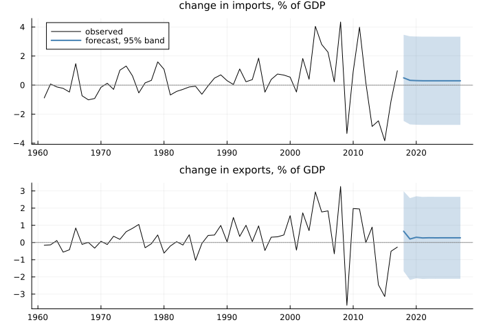
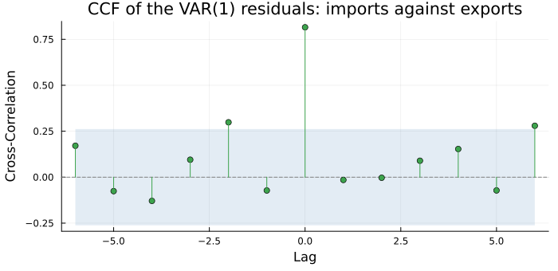
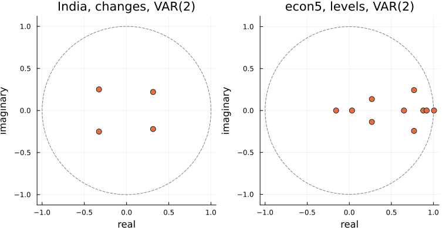
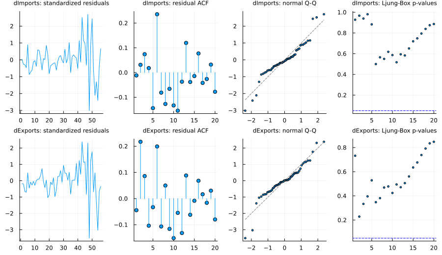
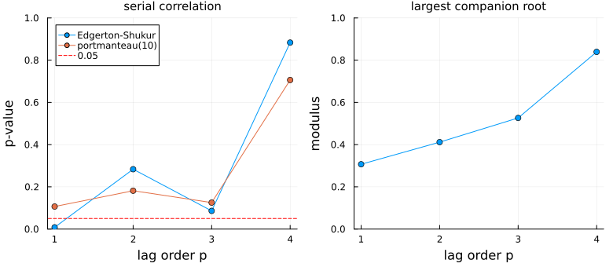
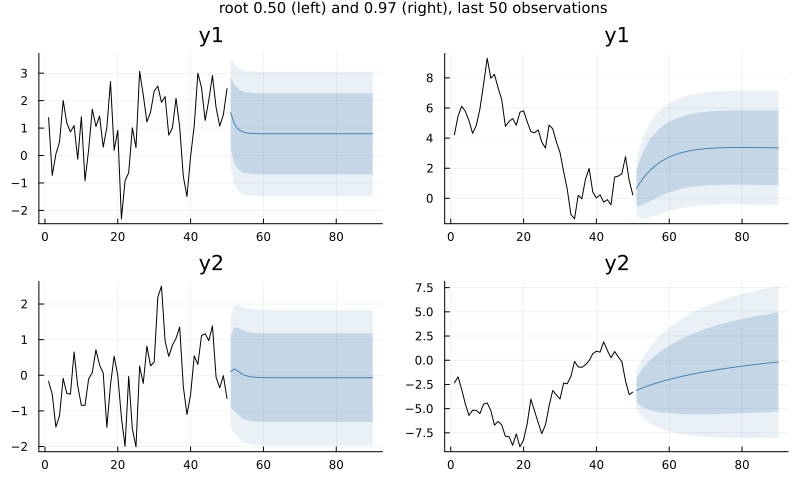
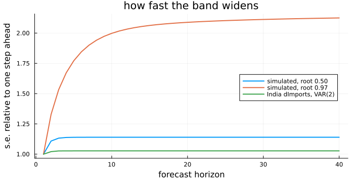
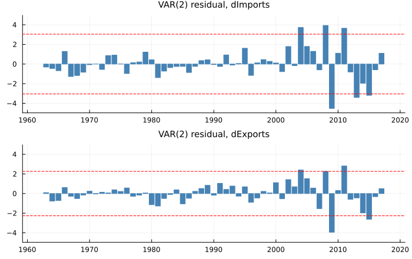

Fitting a Vector Autoregression
using TSAnalytics, Plots, Statistics
g = dataset("global_economy")
ix = findall(==("India"), g.Country)
yr = Int.(g.Year[ix])
imports = Float64.(g.Imports[ix])
exports = Float64.(g.Exports[ix])
dY = (dImports = diff(imports), dExports = diff(exports))
m1 = fit_var(dY, 1)
f1 = forecast(m1, 10)
println("levels: ", f1.levels, "%; first-year 95% band, dImports: ",
round.((f1.lower[1, 1, 2], f1.upper[1, 1, 2]), digits=2), " points")levels: [80.0, 95.0]%; first-year 95% band, dImports: (-2.47, 3.46) pointsfan(f, i, lab) = begin
p = plot(yr[2:end], dY[i]; color=:black, label="observed", title=lab, titlefontsize=10,
legend=i == 1 ? :topleft : false)
pt = f.point[:, i]
plot!(p, 2018:2017+f.horizon, pt; color=:steelblue, linewidth=2, label="forecast, 95% band",
ribbon=(pt .- f.lower[:, i, 2], f.upper[:, i, 2] .- pt), fillalpha=0.25)
hline!(p, [0]; color=:grey, linestyle=:dot, label="")
end
plot(fan(f1, 1, "change in imports, % of GDP"), fan(f1, 2, "change in exports, % of GDP");
layout=(2, 1), link=:x, size=(700, 480), left_margin=3Plots.mm)
The VAR(1) from Chapter 45, fitted to the year-to-year change in India's import and export shares of GDP, asked for ten years of forecasts. It obliged at once: two flat lines a little above zero, inside bands nearly six points wide from the first year. Every fitted VAR will do this, and none will warn you if it should not. Three things need knowing first. Will the model settle if left to run? Has it left structure in what it calls noise? And what are those bands worth? Chapter 45 met the first already: econ5's VAR(2) in levels had a companion root of 1.006, and would explode.
The obvious attempt
You already know how to check a univariate model: test its residuals for autocorrelation with Ljung-Box (Chapter 10). A VAR has one residual series per equation, so test each.
u = m1.resid
for (i, v) in enumerate(m1.names)
lb = ljungbox_test(u[:, i], 5)
println(rpad(v, 9), " Ljung-Box, 5 lags: Q = ", round(lb.statistic, digits=2),
" p = ", round(lb.pvalue, digits=3))
enddImports Ljung-Box, 5 lags: Q = 1.74 p = 0.883
dExports Ljung-Box, 5 lags: Q = 4.14 p = 0.529Both pass comfortably. But a VAR exists because the series talk to each other, and Ljung-Box looks at one series against itself: it cannot ask whether last year's import surprise says anything about this year's export surprise.
r = ccf(u[:, 1], u[:, 2], 6)
at(r, k) = round(r.values[r.lags .== k][1], digits=3)
println("lag 0: ", at(r, 0), " lag -2: ", at(r, -2), " lag 6: ", at(r, 6), " band: ±",
round(1.96 / sqrt(size(u, 1)), digits=3))lag 0: 0.816 lag -2: 0.299 lag 6: 0.28 band: ±0.262plot(r; title="CCF of the VAR(1) residuals: imports against exports", size=(700, 340),
bottom_margin=4Plots.mm, left_margin=3Plots.mm)
The spike at lag 0 is the contemporaneous correlation Chapter 45 found and the VAR keeps in Σ; it is not a failure. The bar at lag −2 is: the import surprise of two years ago lines up with this year's export surprise at 0.299, outside the band, and lag 6 grazes it at 0.28. Two Ljung-Box tests are blind to this by construction. A VAR's residuals are a vector, and need tests that look at the whole vector at once.
The idea
Stability. A VAR(p) on K series can always be rewritten as a VAR(1) on Kp stacked states — today's values and the p − 1 before them — with a single Kp × Kp companion matrix carrying all the lags:
\[\begin{pmatrix} y_t \\ y_{t-1} \\ \vdots \\ y_{t-p+1} \end{pmatrix} = \begin{pmatrix} A_1 & A_2 & \cdots & A_p \\ I & 0 & \cdots & 0 \\ & \ddots & & \vdots \\ 0 & \cdots & I & 0 \end{pmatrix} \begin{pmatrix} y_{t-1} \\ y_{t-2} \\ \vdots \\ y_{t-p} \end{pmatrix} + \cdots\]
Run forward without shocks, the state is multiplied by this matrix again and again. If every eigenvalue has modulus below one, every effect decays: the VAR is stable, the multivariate form of the AR condition in Chapter 17. At one there is a unit root; above, the model explodes.
Joint residual tests. Each univariate test has a vector version. The portmanteau statistic sums, over lags i = 1 … h, a quadratic form in the residual cross-covariance matrices C_i,
\[Q_h = T \sum_{i=1}^{h} \operatorname{tr}\!\left(C_i' C_0^{-1} C_i C_0^{-1}\right),\]
Ljung-Box with every off-diagonal entry counted too, on K²(h − p) degrees of freedom. Breusch-Godfrey regresses the residual vector on its own lags; Jarque-Bera and ARCH-LM generalise the same way.
Making it work
Start with the term every VAR carries unasked: m1 has a constant, the default.
for det in (:none, :const, :trend, :both, :quadratic)
m = fit_var(dY, 1; deterministic=det)
println(rpad(det, 10), "log-likelihood ", round(m.loglik, digits=2), " ",
size(m.det_coef, 2), " term(s) per equation")
end
LR = 2 * (m1.loglik - fit_var(dY, 1; deterministic=:none).loglik)
println("constant vs none: LR = ", round(LR, digits=2), " on 2 df, p = ",
round(exp(-LR / 2), digits=3), " (a χ²(2) upper tail is exp(−x/2))")none log-likelihood -159.58 0 term(s) per equation
const log-likelihood -157.99 1 term(s) per equation
trend log-likelihood -158.05 1 term(s) per equation
both log-likelihood -157.9 2 term(s) per equation
quadratic log-likelihood -156.23 3 term(s) per equation
constant vs none: LR = 3.19 on 2 df, p = 0.203 (a χ²(2) upper tail is exp(−x/2))Five choices; the manual maps each to R's and Python's names, which do not line up. The likelihood barely moves: dropping the constant costs 1.59, a p of 0.2. For forecasting the choice matters far more, because a constant in a VAR on changes is a trend in the levels:
m0 = fit_var(dY, 1; deterministic=:none)
lvl(f, x0) = round.(x0 .+ cumsum(f.point; dims=1)[end, :], digits=1)
x0 = [imports[end], exports[end]]
println("2017: ", round.(x0, digits=1), " 2027, constant: ", lvl(forecast(m1, 10), x0),
" 2027, no constant: ", lvl(forecast(m0, 10), x0))2017: [22.0, 19.0] 2027, constant: [25.2, 22.1] 2027, no constant: [22.3, 19.4]With a constant, the forecast changes settle at about 0.3 points a year, the sample's average drift, and ten years add three points to each share. Without it they settle at zero and the shares stay where 2017 left them. The data cannot choose; the analyst must, and say so.
Stability next. At p = 1 the companion matrix is A₁ itself, and roots returns the moduli of its eigenvalues, largest first.
println("India VAR(1): roots ", round.(roots(m1), digits=3), ", stable = ", is_stable(m1),
"; companion is ", size(companion(m1)))
e = dataset("econ5")
m5 = fit_var(e, 2)
println("econ5 VAR(2): companion is ", size(companion(m5)), ", largest roots ",
round.(roots(m5)[1:2], digits=4), ", stable = ", is_stable(m5))India VAR(1): roots [0.307, 0.221], stable = true; companion is (2, 2)
econ5 VAR(2): companion is (10, 10), largest roots [1.0062, 0.919], stable = falseplot(plot(roots_plot(fit_var(dY, 2)); title="India, changes, VAR(2)"),
plot(roots_plot(m5); title="econ5, levels, VAR(2)"); layout=(1, 2), size=(760, 390))
roots_plot keeps the eigenvalues complex. India's four sit well inside the unit circle, in two conjugate pairs. econ5's ten crowd the boundary, the largest just outside at 1.0062: the signature of trending series modelled in levels, which Chapter 49 takes up.
Now the residuals. var_diagnostics runs the whole set:
d1 = var_diagnostics(m1)
for (nm, t) in (("portmanteau", d1.portmanteau), ("Breusch-Godfrey", d1.bg),
("Edgerton-Shukur", d1.es), ("Jarque-Bera", d1.normality), ("ARCH-LM", d1.arch))
println(rpad(nm, 16), " p = ", round(t.pvalue, sigdigits=3))
end
println("portmanteau at 5 lags: p = ",
round(portmanteau_test(m1; lags=5, adjusted=true).pvalue, digits=3),
" (default here: ", d1.portmanteau.lags, " lags)")portmanteau p = 0.107
Breusch-Godfrey p = 0.025
Edgerton-Shukur p = 0.00824
Jarque-Bera p = 2.04e-7
ARCH-LM p = 1.77e-5
portmanteau at 5 lags: p = 0.015 (default here: 10 lags)Serial correlation first: Edgerton-Shukur, the small-sample F form of Breusch-Godfrey and the one to prefer on 56 observations, rejects at 0.0082; Breusch-Godfrey agrees at 0.025. The portmanteau test at ten lags does not reject, at 0.107, but at five it does, at 0.015. Its verdict depends on how many lags it is asked to look at, so always report the number with the result. Normality and ARCH-LM both reject firmly, a different kind of failure.
diagnostic_plot puts the four-panel picture from Chapter 12 on one row per equation:
plot(diagnostic_plot(m1); size=(900, 520))
Each row looks clean alone; the per-equation Ljung-Box p-values are a screen, not the joint test. The standardised residuals say more: quiet for forty years, then large swings — Chapter 45's post-2003 variance change, which the normality and ARCH tests are reacting to.
The usual fix for serial correlation is another lag, which AIC wanted in Chapter 45 and BIC did not. Checking each order is cheap:
ps = 1:4
fits = [fit_var(dY, p) for p in ps]
es = [es_test(m; lags=5).pvalue for m in fits]
pt = [portmanteau_test(m; lags=10, adjusted=true).pvalue for m in fits]
jb = [normality_test(m).pvalue for m in fits]
rt = [roots(m)[1] for m in fits]
for p in ps
println("p = ", p, ": largest root ", round(rt[p], digits=3), " ES p = ", round(es[p], digits=3),
" portmanteau(10) p = ", round(pt[p], digits=3), " JB p = ", round(jb[p], sigdigits=2))
end
m2 = fits[2]p = 1: largest root 0.307 ES p = 0.008 portmanteau(10) p = 0.107 JB p = 2.0e-7
p = 2: largest root 0.412 ES p = 0.283 portmanteau(10) p = 0.182 JB p = 0.026
p = 3: largest root 0.526 ES p = 0.086 portmanteau(10) p = 0.125 JB p = 0.047
p = 4: largest root 0.839 ES p = 0.883 portmanteau(10) p = 0.706 JB p = 0.014q1 = plot(ps, [es pt]; marker=:circle, label=["Edgerton-Shukur" "portmanteau(10)"],
xlabel="lag order p", ylabel="p-value", title="serial correlation", ylims=(0, 1),
legend=:topleft, titlefontsize=10)
hline!(q1, [0.05]; color=:red, linestyle=:dash, label="0.05")
q2 = plot(ps, rt; marker=:circle, legend=false, xlabel="lag order p", ylabel="modulus",
title="largest companion root", ylims=(0, 1), titlefontsize=10)
plot(q1, q2; layout=(1, 2), size=(780, 340), bottom_margin=4Plots.mm, left_margin=3Plots.mm)
One extra lag clears the serial-correlation tests: Edgerton-Shukur's p rises to 0.283. That is a concrete reason to prefer the VAR(2) over BIC's VAR(1) — not a better criterion value but a residual defect removed. The price, beyond four more coefficients, is that the largest root climbs with every lag, from 0.307 to 0.839 at p = 4. No order fixes normality: lags cannot fix a variance that changed.
How fast a forecast band widens, and where it stops, is set by the largest root. Two simulated bivariate VAR(1)s from the package's test fixtures make the point cleanly: identical in construction, one with its largest root at 0.50 and one at 0.97.
using DelimitedFiles
fx(name) = readdlm(joinpath(pkgdir(TSAnalytics), "test", "fixtures", "var", name), ','; skipstart=1)
st, nu = fx("var2_p1.csv"), fx("var2_nearunit.csv")
ms, mn = fit_var(st, 1), fit_var(nu, 1)
println("largest roots: ", round(roots(ms)[1], digits=2), " and ", round(roots(mn)[1], digits=2))
ratio(m) = (f = forecast(m, 40); f.se[:, 1] ./ f.se[1, 1])
for (lab, m) in (("root 0.50", ms), ("root 0.97", mn), ("India VAR(2)", m2))
println(rpad(lab, 13), "s.e. ratio at h = 5, 10, 20, 40: ", round.(ratio(m)[[5, 10, 20, 40]], digits=2))
endlargest roots: 0.5 and 0.97
root 0.50 s.e. ratio at h = 5, 10, 20, 40: [1.14, 1.14, 1.14, 1.14]
root 0.97 s.e. ratio at h = 5, 10, 20, 40: [1.77, 2.0, 2.09, 2.13]
India VAR(2) s.e. ratio at h = 5, 10, 20, 40: [1.03, 1.03, 1.03, 1.03]plot(plot(forecast(ms, 40); history=st[151:end, :]), plot(forecast(mn, 40); history=nu[151:end, :]);
layout=(1, 2), size=(800, 480), plot_title="root 0.50 (left) and 0.97 (right), last 50 observations",
plot_titlefontsize=10)
plot(1:40, [ratio(ms) ratio(mn) ratio(m2)]; label=["simulated, root 0.50" "simulated, root 0.97" "India dImports, VAR(2)"],
linewidth=2, xlabel="forecast horizon", ylabel="s.e. relative to one step ahead",
title="how fast the band widens", legend=:right, size=(700, 360),
left_margin=3Plots.mm, bottom_margin=3Plots.mm)
Each step adds a term to the forecast variance, scaled by a power of the companion matrix. With small roots those terms vanish fast and the band flattens at the unconditional spread: India's within a year or two, the first simulated model's by five. At 0.97 each power shrinks by only three per cent; the band is still widening after twenty steps, ending at over twice its one-step width. At a root of one it would never stop — a random walk's band grows with √h for ever.
Two traps, both run against vars 1.6.1 in R 4.6.0 and statsmodels 0.14.1 and 0.15.0.
Roots, inverted. On India's VAR(1), vars::roots() returns 0.3070 and 0.2209, as here; statsmodels' .roots returns 4.527 and 3.257 — the same model, reported as the roots of the characteristic polynomial, which must lie outside the unit circle. They are reciprocals. The trap is on econ5's unstable VAR(2): R reports a largest root of 1.0062, while the statsmodels root nearest the circle is 0.9939. Read with R's rule, "below one is stable", that 0.9939 passes a model that explodes. statsmodels' own is_stable() correctly says False; the danger is in carrying a threshold across conventions. roots follows R; for the other take 1 ./ roots(m).
p-values that cannot be small. vars computes every diagnostic p-value as 1 − CDF. On econ5's VAR(2) the multivariate Jarque-Bera statistic is 97.308 on 10 df in all three implementations; statsmodels and this package report p = 1.88e-16, vars reports 2.22e-16 — machine epsilon, the smallest gap 1 − CDF can resolve. On the VAR(1) the statistic is 147.07, the true tail is 1.49e-26 (R's own pchisq(…, lower.tail = FALSE)), and vars reports 0. No conclusion changes at these sizes, but a 0 is a claim of impossibility, and breaks anything that takes logs. More in Vector Autoregression.
The complication
The forecast bands rest on one Σ, estimated from the whole sample. India's residuals do not have one.
u2 = m2.resid
yu = yr[end - m2.T + 1:end]
sd = sqrt.([m2.sigma_df[i, i] for i in 1:2])
out = abs.(u2 ./ sd') .> 1.96
for (lab, w) in (("1963-2002", yu .< 2003), ("2003-2017", yu .>= 2003))
println(lab, ": ", sum(w), " years, share outside the 95% band: ",
round.(vec(mean(out[w, :]; dims=1)), digits=2))
end1963-2002: 40 years, share outside the 95% band: [0.0, 0.0]
2003-2017: 15 years, share outside the 95% band: [0.4, 0.27]lim = 1.1 * maximum(abs, u2)
panels = [begin
p = bar(yu, u2[:, i]; ylims=(-lim, lim), color=:steelblue, linecolor=:steelblue, legend=false,
title="VAR(2) residual, " * string(m2.names[i]), titlefontsize=10)
hline!(p, [-1.96, 1.96] .* sd[i]; color=:red, linestyle=:dash)
end for i in 1:2]
plot(panels...; layout=(2, 1), link=:x, size=(700, 440))
The dashed lines are the one-step 95% band the forecast uses. In the forty years to 2002 not one residual crosses it, in either equation; in the fifteen from 2003, 40% of the import residuals and 27% of the export residuals do, against the 5% the band promises. A band built from the average is too wide for the quiet decades and too narrow for the recent one — the regime a forecast from 2017 begins in. (It also treats the estimated coefficients as known, a smaller optimism.) The VAR is not useless, but its bands describe the average year from 1963 to 2017, not the next one; say so, or model the variance, as Part VI did for one series.
Where this leaves you
You can now check a fitted VAR properly: its deterministic terms and what they imply for the long run, its stability from the companion roots, its residuals jointly rather than one equation at a time, and its forecasts, knowing that the largest root sets how fast the bands widen — and you have seen a diagnostic overturn a criterion's choice.
What you cannot yet do is answer the questions the VAR was built for. Whether last year's imports, taken together across lags, add anything to the forecast of exports is a test, not a reading of one coefficient; Chapter 47 sets it up. After that, Chapter 48 follows a single shock through the system, and Chapter 49 returns to econ5's root at 1.006.
See also
- Chapter 10 — the univariate residual tests these generalise
- Chapter 12 — the four-panel diagnostic display, one series at a time
- Chapter 22 — forecasting and intervals for a single series
- Chapter 45 — why a VAR, and how to choose its order
- Vector Autoregression — every argument, and the reference conventions in full
- API:
fit_var,roots,companion,roots_plot,var_diagnostics,portmanteau_test,es_test,normality_test,diagnostic_plot,VARForecast